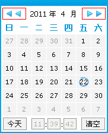
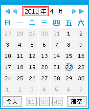
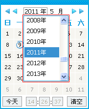

日历的各种在线演示示例
jQuery方式和普通函数式
-
jQuery方式调用
J(function(){ J('#inp1').calendar(); }); -
普通函数方式调用
function opcal(){ J.calendar.Show(); } //输入框的代码： <input class="runcode" id="inp2" onclick="opcal();"/>
下拉，输入，导航选择日期(年月输入框都具备以下三种特性)
-
通过导航图标选择

-
直接使用键盘输入数字

-
直接从弹出的下拉框中选择

常规功能使用演示
-
id参数(注意这里的id参数的值是左边输入框的id)，图标触发
J('#img').calendar({ id:'inp3' }); -
是否显示按钮栏
J('#inp4').calendar({ btnBar:false }); -
自动选择显示位置
当控件处在页面边界时，它会自动选择显示的位置，所以没有必要担心弹出框会被页面边界遮住的问题了。
-
自定义格式(其它各种自定义格式请参阅 API参数控制接口)
J('#inp5').calendar({ format:'yyyy年MM月dd日 HH时mm分ss秒' }); -
取得系统可识别的日期值(重要)
// 类似于 1999年7月5日 这样的日期是不能够被系统识别的,他必须转换为能够识别的类型如 1999-07-05 J('#inp6').calendar({ format:'yyyy年MM月dd日', real:'realInp' }); // input文本框的代码是： <input class="runcode" id="inp6"/><input class="runcode" id="realInp" type="text"/> // 注意:在实际应用中,一般会把real指定为一个hidden控件,这里是为了把真实值展示出来,所以使用文本框 // 关键属性: real 指定一个控件或控件的ID,必须具有value属性(如input),用于存储真实值真实的日期值是:
-
自动纠错功能
当日期框中的值不符合格式时,系统会尝试自动修复,显示当前日期。
日期范围限制
-
静态限制
// 限制日期的范围是 2011-04-10到2008-05-27 (注意minDate和maxDate的格式一定要是yyyy-MM-dd) J('#inp7').calendar({ minDate:'2011-04-10', maxDate:'2011-05-27' }); -
动态限制(请参阅 API参数控制接口 里的动态变量表)
// 只能选择今天以前的日期 J('#inp8').calendar({ maxDate:'%y-%M-%d' }); -
只能选择今天以后的日期
J('#inp9').calendar({ minDate:'%y-%M-%d' }); -
只能选择本年4月当前天到当前月的25号之间的日期
J('#inp10').calendar({ minDate:'%y-04-%d', maxDate:'%y-%M-25' }); -
前面的日期不能大于后面的日期
// #inp12为一个#号加上后面输入框的id J('#inp11').calendar({ maxDate:'#inp12' }); // #inp11为一个#号加上前面输入框的id J('#inp12').calendar({ minDate:'#inp11' });有效期从到
-
前面的日期不能大于后面的日期(targetFormat参数示例)
// #inp14为一个#号加上后面输入框的id J('#inp13').calendar({ maxDate:'#inp14', format:'yyyyMMdd' targetFormat:'yyyy年MM月dd日' }); // #inp13为一个#号加上前面输入框的id J('#inp14').calendar({ minDate:'#inp13', format:'yyyy年MM月dd日', targetFormat:'yyyyMMdd' }); 注：如果目标文本框的日期格式不是'yyyy-MM-dd'的格式，则一定要加上targetFormat参数，指明目标文本框的日期格式有效期从到
-
无效周(可以使用此功能禁用周日至周六所对应的日期,相关属性:disWeek (0至6 分别代表 周日至周六))
// 前面的输入框代码(周六所对应的日期无效) J('#inp15').calendar({ disWeek:'6' }); // 后面的输入框代码(周日和周四所对应的日期无效) J('#inp16').calendar({ disWeek:'0,4' });
无效日期(可以使用此功能禁用,所指定的一个或多个日期,只要你熟悉正则表达式,你可以尽情发挥)
-
禁用 每个月份的 5日 15日 25日
// '5$' 表示以 5 结尾 注意 $ 的用法 J('#inp17').calendar({ disDate:['5$'] }); -
禁用 所有早于2000-01-01的日期
J('#inp18').calendar({ disDate:['^19'] }); -
禁用 2011-05-05 和 2011-05-24
J('#inp19').calendar({ disDate:['2011-05-05','2011-05-24'] }); -
禁用 2011-所有月份-04 和 2011-05-29
J('#inp20').calendar({ disDate:['2011-..-04','2011-05-29'] }); -
禁用 [2000至2008]-05-01 和 2011-05-29
J('#inp21').calendar({ disDate:['200[0-8]-05-01','2011-05-29'] }); -
禁用 所有年份和所有月份的第7天和今天
J('#inp22').calendar({ disDate:['....-..-07','%y-%M-%d'] });
有效日期
使用无效日期可以很方便的禁用不可用的日期,但是在只需要启用少部分日期的情况下,有效日期的功能就非常适合了
关键属性: enDate 默认为false, 为true时,无效日期变成有效日期
-
启用 每个月份的 5日 15日 25日
J('#inp23').calendar({ disDate:['5$'], enDate:true });
自定义事件
-
自定义事件
如果你需要做一些附加的操作,你也不必担心,日期控件自带的自定义事件可以满足你的需求.此外,你还可以在自定义事件中调用提供的API库来做更多的运算和扩展,绝对可以通过很少的代码满足你及其个性化的需求. 注意下面几个重要的指针,将对你的编程带来很多便利 this: 指向日历对象实例，也就是J.calendar对象 this.inpObj: 指向文本框 this.cal: 指向日历控件对象 注意:函数原型必须使用类似 function(dp){} 的模式,这样子,在函数内部才可以使用this -
onSetDate事件
J('#inp24').calendar({ onSetDate:function(){alert(this.inpObj.value);} }); -
getDateStr()用法
// getDateStr的参数用法请参阅 API参数控制接口 J('#inp25').calendar({ onSetDate:function(){alert('日期框原来的值为:'+this.inpObj.value+',要用新选择的值:'+this.getDateStr('date')+'覆盖吗?');} });
-
联动日历选择(2.0.3新增)
J('#inp26').calendar({ linkageObj:'#inp27', maxDate:'#inp27' }); // id为inp27的输入框的代码为： // 这里要注意要联动的日历文本框一定要用onfocus事件，调用日历的方式也只能用J.calendar.Show({});这种 <input class="runcode" id="inp27" onfocus="opcal1();"/>
示例中各API接口的详细说明请参阅 API参数控制接口